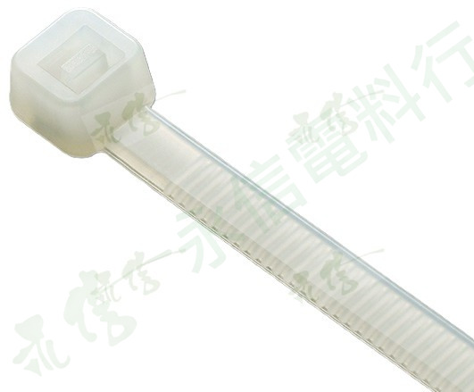
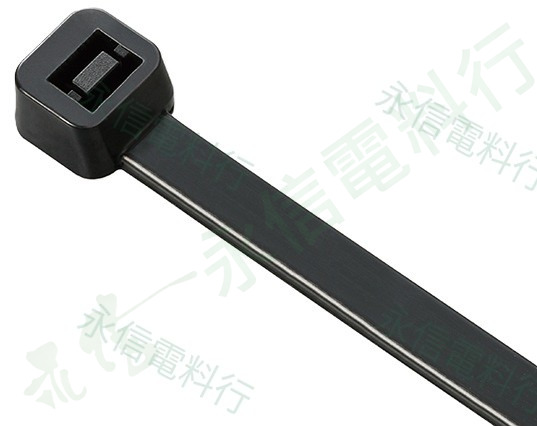
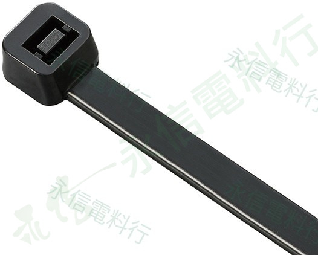
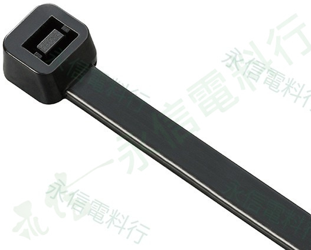
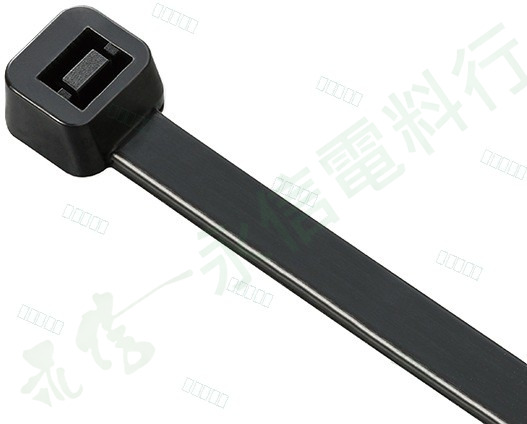
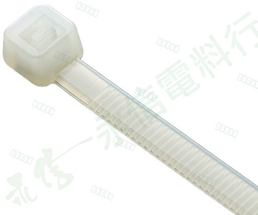
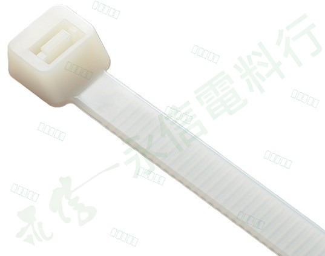
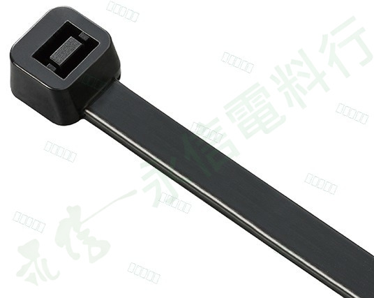
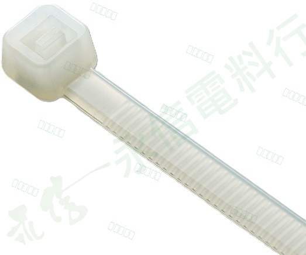

KSS CABLE TIES
凱士士 KSS CV 系列尼龍束帶
依實物照片與資料夾名稱整理白色與黑色尼龍束帶型號。
CV SERIES
現有商品照片
目前建立 14 個型號。頁面僅採用你提供的照片與資料夾名稱可確認資訊。

 凱士士 KSS
凱士士 KSSCV-100
白色尼龍束帶，資料夾標示尺寸為 100 × 2.5 mm，包裝為 1 包／100 pcs。
查看商品照片與資料 → 凱士士 KSS
凱士士 KSSCV-100B
黑色尼龍束帶，資料夾標示尺寸為 100 × 2.5 mm，包裝為 1 包／100 pcs。
查看商品照片與資料 →
凱士士 KSSCV-150
白色尼龍束帶，資料夾標示尺寸為 150 × 3.6 mm，包裝為 1 包／100 pcs。
查看商品照片與資料 →
凱士士 KSSCV-150B
黑色尼龍束帶，資料夾標示尺寸為 150 × 3.6 mm，包裝為 1 包／100 pcs。
查看商品照片與資料 →凱士士 KSSCV-180
白色尼龍束帶，資料夾標示尺寸為 180 × 3.6 mm，包裝為 1 包／100 pcs。
查看商品照片與資料 →
凱士士 KSSCV-180B
黑色尼龍束帶，資料夾標示尺寸為 180 × 3.6 mm，包裝為 1 包／100 pcs。
查看商品照片與資料 →凱士士 KSSCV-200
白色尼龍束帶，資料夾標示尺寸為 203 × 4.6 mm，包裝為 1 包／100 pcs。
查看商品照片與資料 →
凱士士 KSSCV-200B
黑色尼龍束帶，資料夾標示尺寸為 203 × 4.6 mm，包裝為 1 包／100 pcs。
查看商品照片與資料 →
凱士士 KSSCV-200KB
黑色尼龍束帶，資料夾標示尺寸為 203 × 4.6 mm，包裝為 1 包／1000 pcs。
查看商品照片與資料 →凱士士 KSSCV-200M
白色尼龍束帶，資料夾標示尺寸為 203 × 2.5 mm，包裝為 1 包／100 pcs。
查看商品照片與資料 →
凱士士 KSSCV-250
白色尼龍束帶，資料夾標示尺寸為 250 × 4.8 mm，包裝為 1 包／100 pcs。
查看商品照片與資料 →
凱士士 KSSCV-300
白色尼龍束帶，資料夾標示尺寸為 300 × 7.6 mm，包裝為 1 包／100 pcs。
查看商品照片與資料 →
凱士士 KSSCV-300SB
黑色尼龍束帶，資料夾標示尺寸為 300 × 4.8 mm，包裝為 1 包／100 pcs。
查看商品照片與資料 →
凱士士 KSSCV-385
白色尼龍束帶，資料夾標示尺寸為 385 × 4.8 mm，包裝為 1 包／100 pcs。
查看商品照片與資料 →